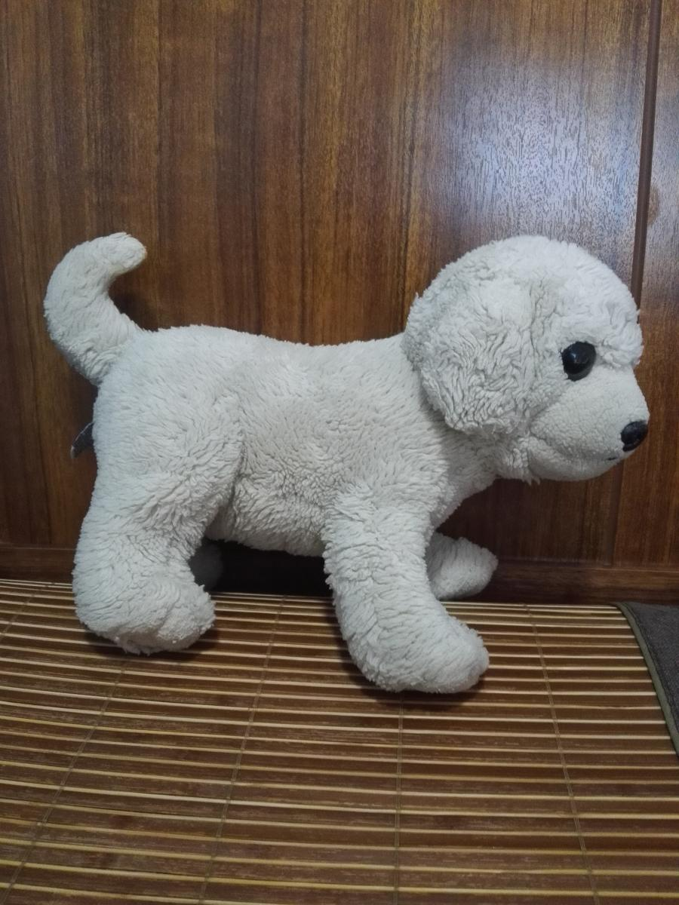

你好，我是 Aoan2011
One Editor 作者 · 专注终端工具与开发者效率
热爱开源，追求极简而强大的设计美学
关于我
一名热衷于创造高效开发工具的开发者，专注于终端 UI、代码编辑器与开发者体验方向。 相信好的工具应当轻量、快速且高度可定制，在极简的外表下蕴藏强大的能力。
One Editor 是我的主力开源项目，基于 Python + Textual 从零构建， 致力于在终端中提供接近现代 IDE 的编辑体验，同时保持极致的轻量与启动速度。
技术方向
终端 UI 开发
深耕 Textual TUI 框架，打造现代化终端交互界面
编辑器与 LSP
语言服务器协议集成，代码补全、诊断与跳转
Python 全栈
从后端逻辑到前端界面，完整的项目工程能力
开源项目维护
项目架构、版本管理、社区协作与文档建设
代表项目
One Editor
基于 Textual 构建的现代化终端代码编辑器，提供接近 VSCode 的编辑体验，同时保持轻量、快速和高度可定制。
100%
Python 编写
LSP
多语言支持
AI
Ollama 集成